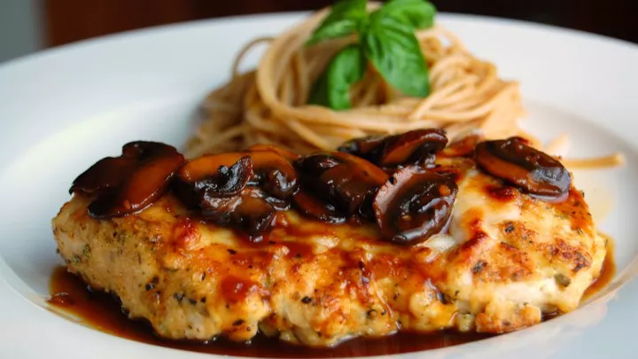

Chicken Marsala

Description
Chicken Marsala is an Italian-style recipe for tender pan-fried
chicken breasts in a sweet Marsala wine and mushroom sauce. It's
super quick and easy to make for a weeknight dinner AND
sophisticated enough for company.
Ingredients
- 1/4 cup all-purpose flour for coating
- 1/2 teaspoon salt
- 1/4 teaspoon ground black pepper
- 1/4 teaspoon dried oregano
- 4 medium skinnless, boneless chicken breast halves-
pounded 1/4 inch thick
- 4 tablespoons butter
- 4 tablespoons olive oil
- 1 cup slicked mushrooms
- 1/2 cup marsala wine
- 1/4 cup cooking sherry
Steps
- Gather all ingredients.
- In a shallow dish or bowl, mix together the flour, salt, pepper,
and oregano.
- Coat chicken pieces in flour mixture.
- In a large skillet, melt butter in oil over medium heat. Place
chicken in the pan, and lightly brown.
- Turn over chicken pieces, and add mushrooms. Pour in wine and sherry.
- Cover skillet; simmer chicken 10 minutes, turning once, until
no longer pink and juices run clear.